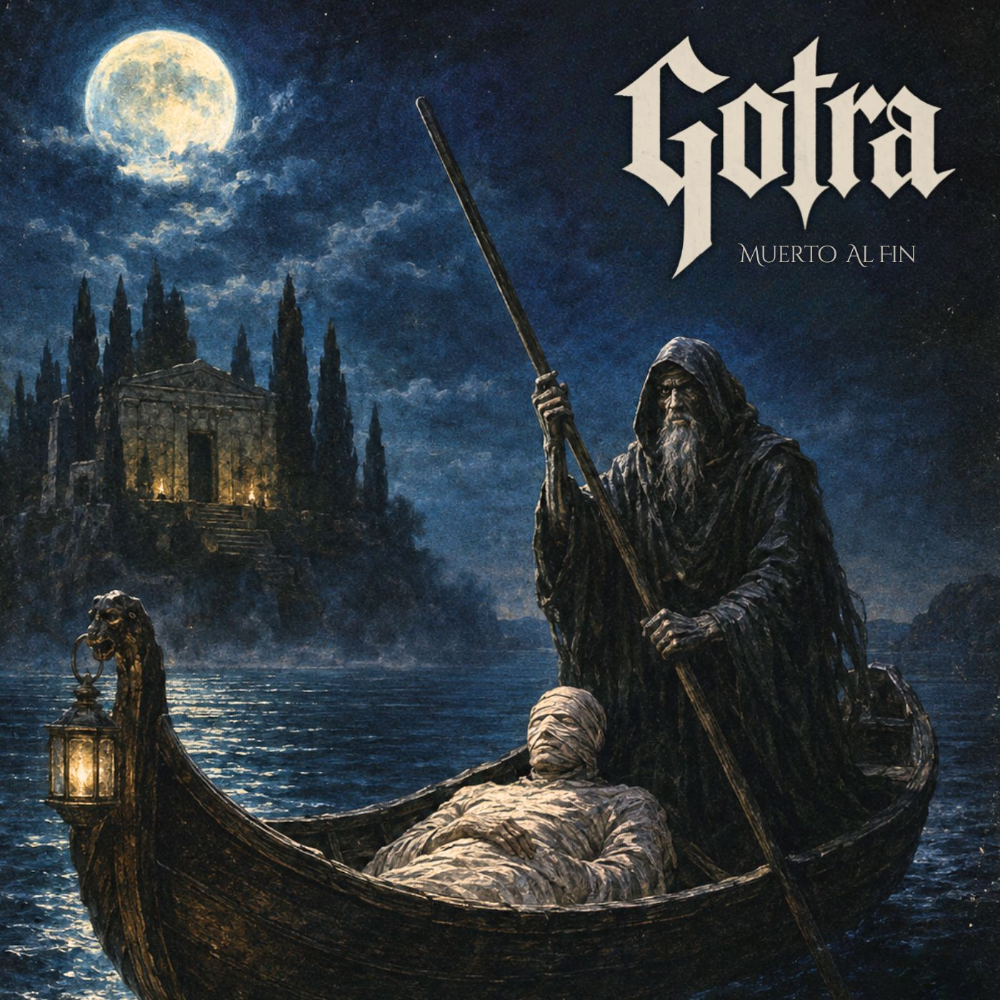

LGC — ¿Cómo surge el nombre del proyecto, cuál es la raíz del mismo y qué necesitas transmitir con él? Entendiendo que es un proyecto personal y autogestivo.
Jules: El nombre lo encontré en una charla de un lama tibetano por la tele. Gotra se entiende dentro de una de las tradiciones como el potencial intrínseco que cada uno tiene para iluminarse. No solamente lo vi ligado al concepto del nirvana, sino que me pareció que resumía algo que venía leyendo también de C. G. Jung en El hombre y sus símbolos: «Uno no se ilumina imaginando figuras de luz, sino haciendo consciente la oscuridad». Sentía que ese era un buen camino: sumergirse en la oscuridad.
«Este proyecto tiene esa intención: ir a buscar lo que está oculto y amigarse con la oscuridad desde la música y la distorsión.»— Jules (GOTRA)
Por eso este proyecto tiene esa intención: ir a buscar lo que está oculto y amigarse con la oscuridad desde la música y la distorsión. Paradójicamente, no se siente para nada oscuro. Aunque algunas historias cuenten que jugar con ciertos arquetipos dentro del espiritismo o las prácticas negras del ocultismo puedan ser peligrosas, lo oculto no solo se trata de eso; vivir la dualidad y aceptarla es todo lo contrario: un equilibrio. En GOTRA hay más de Filosofía Hermética e introspección que de Aleister Crowley o San Cipriano, aclaro. Oscuridad sí, pero luz también.
LGC — A la hora de convocar a músicos invitados, ¿cómo fue esa elección, qué buscaste en ellos para que estén en línea con lo que vos querés transmitir?
Jules: Con Sebastián Rey ya venía compartiendo canciones. Fue el primero al que le pasé tres maquetas y en unos días me devolvió las pistas definitivas. Es un músico y tecladista excepcional: rápido, intuitivo y muy formado. Sabe por dónde ir al toque y qué sonidos usar, así que fue la elección obvia.
A Javi Rubio lo conocí gracias a Fernando Cosenza. Un día le mostré la canción y le conté que me estaba costando conseguir batero. Me dijo: «¿Por qué no le escribís a Javier? Seguro se re copa». Me pasó su número y a las horas ya estaba hablando con él por WhatsApp. Escuchó las canciones y me dijo que sí de una. Nos entendimos enseguida, así que todo se dio de forma muy natural. Tanto Javier como Sebastián hicieron un aporte que aprecio un montón, totalmente desde la buena onda.

LGC — El primer single «Muerto al fin» muestra en el artwork una fusión de mitologías antiguas conjugando la idea de la vida y la muerte como un ciclo que se retroalimenta. ¿Cuál es tu visión personal de la vida, la muerte y el propósito vital?
Jules: Quería que el arte de tapa represente de alguna manera esa idea, porque aunque el título sea «Muerto al fin», hace más referencia al fin de una lucha o a un nacimiento si se quiere: el descenso a la oscuridad o a la sombra. Como te mencionaba antes, bajo el concepto de atravesar la oscuridad como un paso más hacia la luz o la consciencia, la integración de la sombra.
«En el famoso cuadro de Böcklin aparece Caronte conduciendo las almas hacia el reino de los muertos; sentí que retrataba a la perfección el espíritu de esta canción: la muerte como comienzo y reflexión.»— Jules (GOTRA)
Leyendo “Jung y el tarot” de Sallie Nichols, cuando hablaban sobre el arcano de la Muerte, mostraban la pintura de Böcklin, La isla de los muertos. Ahí hice un poco de sincretismo y mezcla de culturas, porque yo venía con la imagen del Bardo Thodol (El libro tibetano de los muertos), donde se habla del viaje que emprende uno al morir y los pasos a seguir para iluminarse y no volver a reencarnar. En el famoso cuadro de Böcklin aparece Caronte, el barquero de la mitología griega que cumple la función de conducir las almas a través de las aguas hacia el reino de los muertos; sentí que retrataba a la perfección el espíritu de esta canción.
Es la idea de la muerte como comienzo y reflexión. Como comienzo, me refiero a animarse a descubrir la sombra; como reflexión, siguiendo el concepto de karma, a pensar en el hecho de qué pasa si uno tuviese que volver a este plano en otra vida para enmendar las propias acciones o terminar lo que nunca empezamos.
LGC — ¿Qué esperás de este proyecto, no solo en la repercusión del mismo sino en cada persona que se predisponga a escucharlo?
Jules: Es una pregunta que me sigo haciendo. Claro que uno quiere que el otro lo disfrute y conecte con lo producido; si bien uno crea para sí mismo porque la expresión es vital para no volverse loco, da mucha alegría cuando a alguien le gusta.
Al mismo tiempo, intento aprender a no esperar nada para seguir haciendo música con la tranquilidad de la no-expectativa. Eso incluye aceptar que uno no controla cómo le llega la obra a cada persona. Si genera algo, que sea disfrute. Como oyente y fan de otras bandas, busco que la música me energice y me emocione; me gustaría lograr eso con mis temas, aunque el resultado final ya no dependa de mí, lo que comparto tal vez sea mi búsqueda.
LGC — ¿Para cuándo tenés pensado lanzar el próximo single y si la idea es generar un álbum completo?
Jules: Sería increíble sacar un álbum completo: canciones y ganas sobran. Por el momento vamos a ir sacando un par de temas más y viendo cómo fluye todo. No puedo dar una fecha exacta para el próximo lanzamiento, pero ya estamos trabajando de lleno en la preproducción del nuevo material.
LGC — ¿Algo más que quieras agregar que consideres importante transmitir?
Jules: Nada más que agradecerles a ustedes por el tiempo y el trabajo que le ponen para difundir el género. Se aprecia mucho. Un abrazo.